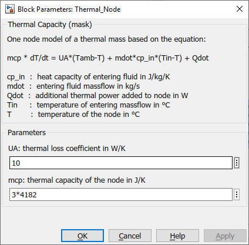

Thermal_Node
Path: CARNOT/Basic/Thermal_Models
Purpose:
One node model of a thermal capacity with entering massflow and losses to ambient.
The block breaks the direct feedthrough of any incoming temperature.
Description:
The block integrates an incomming temperature and mass flow according to:
mcap * dTnode/dt = UA_loss * (Tamb - Tnode) + mdot * cp * (Tin- Tnode) + Qdot
where
| Symbol | Used for | Unit |
| cp | heat capacity | J/kg/K |
| m | mass of the node | kg |
| mcap | is the thermal capacity = m * cp | J/K |
| mdot | mass flow entering the node | kg/s |
| t | time | s |
| Tamb | ambient temperature (for losses) | °C |
| Tnode | node temperature | °C |
| UA_loss | loss coefficient to the ambient | W/K |
| Qdot | additional thermal power to the node | W |
Input:
| Tamb | : | ambient temperature in °C |
| Tin | : | inlet temperature in °C |
| mdot | : | entering mass flow in kg/s |
| Qdot | : | additional power to the node in W |
| cp | : | heat capacity of the fluid in J/kg/K |
Output:
| Tout | : | node and outlet temperature in °C |
Parameters and Dialog Box:

Characteristics:
| Direct Feedthrough | : | Yes |
| Sample Time | : | Inherited from driving block |
| Vectorized | : | No |